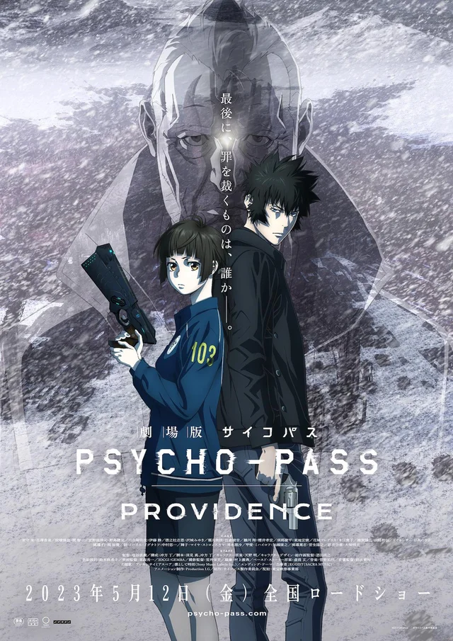

"Psycho-Pass:Providence" nouveau visuel et bande-annonce
Psycho-Pass est une série d'animation cyberpunk japonaise produite par le studio Production I.G, co-réalisée par Katsuyuki Motohiro et Naoyoshi Shiotani et écrite par Gen Urobuchi ( Bubble ). Les designs sont d'Akira Amano ( Reborn! ) et la musique est composée par Yuno Kanno à qui l'on doit la merveilleuse OST de l'anime Jojo's Bizarre Adventures de la partie 3 à 6. Apres l'annonce d'un nouveau film intitulé Psycho-pass : Povidence dans le cadre du 10th Anniversary Project de l’anime Psycho-Pass, Nous avons enfin un aperçu du film d'animation où nous voyons l'opening du film, Alexithymia Spare interprétée par Ling Tosite Sigure et l'ending, Tōjisha par EGOIST.
© Production I.G
Pour ceux qui ne sont pas familier avec l'univers de Psycho-Pass :
Synopsys
Dans un futur proche, il est possible de mesurer instantanément et quantifier l’état d’esprit d’une personne et de sa personnalité. Ces informations sont enregistrées et traitées par le Ministère des Affaires sociales et de la Santé, dont le terme Psycho-Pass se réfère à une norme utilisée pour mesurer l’état d’une personne. L’histoire est centrée autour de l’agent de terrain, Shinya Kogami, membre du Bureau d’investigation criminelle et de la nouvelle recrue, Akane Tsunemori.
Psycho-Pass se scynde en une serie d’animations avec 3 saisons ainsi que d’un film d’animation sobrement intitulé Psycho Pass Le film, puis d’une trilogie de films Psycho Pass : Sinners of the System et enfin le nouveau film Psycho-Pass : Providence.
La chronologie se fait comme suit:
• La saison 1 de 22 épisodes, sortie en octobre 2012 jusqu'au 23 mars 2013.
• La saison 2 de 11 épisodes, sortie en octobre 2014 jusqu'en decembre 2014.
• Entre la sortie de la saison 2 et 3, on a pu découvrir Psycho-Pass : Le Film en 2015 qui se concentre sur l’inspecteur Akane.
• Puis, pour faire le lien entre le film et la saison 3, une trilogie de film Psycho Pass : Sinners of the System, sortie début 2019.
• Et une troisième saison, de 8 épisodes, sortie le 24 Octobre 2019.
• Le troisième film, Psycho-Pass 3 : First Inspector sorti le 27 mars 2020.
• Tout recemment le film Psycho-Pass : Providence prevue pour le 12 mai 2023.
 Locks experience Requiem
Locks experience Requiem